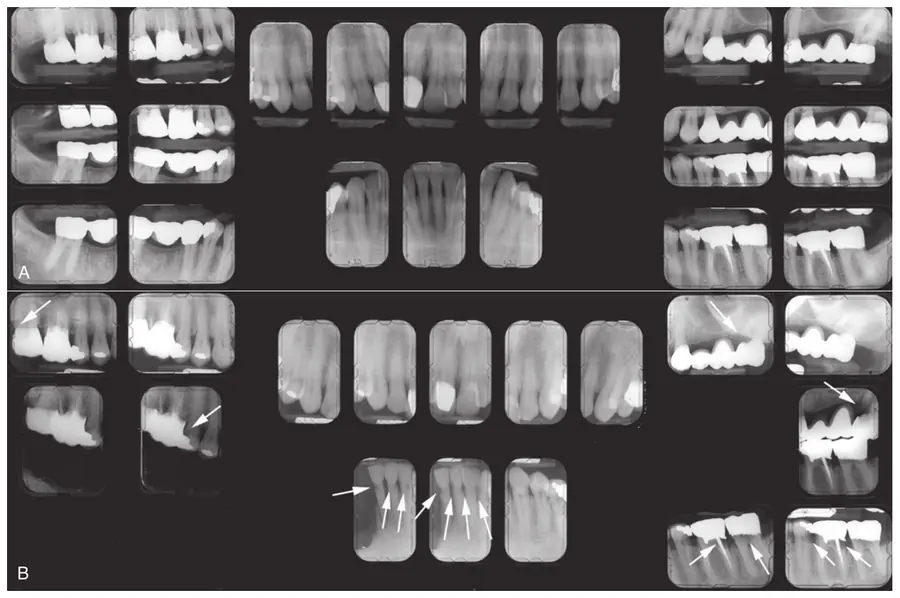
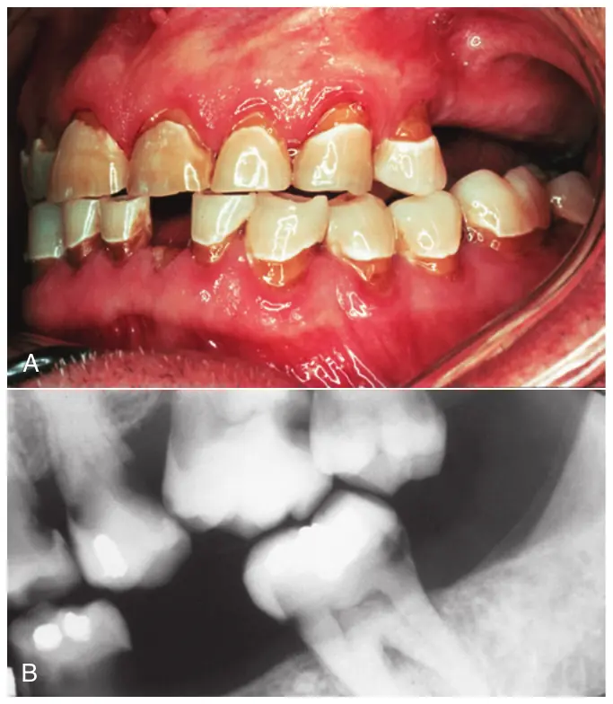

نسخه استخراجشده؛ ترجمه یا تأیید علمی انجام نشده است. وضعیت: captured
پایهی منطقی پرتودرمانی: پرتودرمانی برای درمان نئوپلاسمهای بدخیم بر این واقعیت استوار است که سلولهای تومور در مراحل رشد فعال، در مقایسه با بافت بالغ، به پرتو یونیزان حساسترند.

و یک قاعدهی پیشبینیکننده: هرچه سلولها سریعتر تکثیر شوند یا سلولهای تومور تمایزنیافتهتر باشند، احتمال مؤثر بودن پرتو بیشتر است.
سازوکار: پرتو با تداخل در مادهی هستهای سلولها، از تکثیرشان جلوگیری میکند.
ولی یک مسئلهی بنیادین هست: سلولهای میزبان طبیعی هم از پرتو اثر میپذیرند و باید حین درمان تا حد امکان محافظت شوند.
و روش رساندن پرتو: پرتو میتواند به چند شکل به بیمار برسد، از جمله کاشت مادهی رادیواکتیو در داخل تومور؛ ولی معمولترین راه، رساندن پرتو از بیرون با مولدهای بزرگ اشعهی ایکس است. دوز از حدی که بافتهای طبیعی تحمل میکنند فراتر نمیرود، و نواحی مجاورِ درگیرنشده با حفاظ در امان میمانند.
و دو سازوکار رساندن که بافتهای میزبان را در ناحیهی بلافصل تومور نجات میدهند:
و به تفاوت این دو دقت کن: فرکشنیشن دوز را در زمان پخش میکند؛ پورتهای متعدد آن را در فضا پخش میکنند. هر دو یک هدف دارند: رساندن دوز کامل به تومور، بیآنکه بافت سالم همان دوز را بگیرد.
سازوکار: موادی که با تداخل در سلولهای توموری سریعالرشد عمل میکنند برای درمان بسیاری از بدخیمیها به کار میروند. مانند پرتو، این مواد کاملاً انتخابی نیستند و تا حدی بر سلولهای طبیعی هم اثر میگذارند.

و درمان چنددارویی: برای کاهش سمّیت یک عامل واحد که با مقدار زیاد داده شود، درمان با چند عامل اغلب تجویز میشود — بسیاری از بیماران همزمان سه تا پنج عامل دریافت میکنند. هرکدام ممکن است در نقطهی متفاوتی از چرخهی زندگی سلول توموری عمل کند، و بدینسان اثربخشی را با سمّیت کمتر برای میزبان بالا ببرد.
اثر بر مخاط دهان:
اثر بر دستگاه خونساز: سرکوب مغز استخوان — که بهصورت لکوپنی، نوتروپنی، ترومبوسیتوپنی، و کمخونی بروز میکند — پیامد شایع چند شکل از شیمیدرمانی سرطان است.
اثر بر میکروبیولوژی دهان — و عددی که باید بدانی: عوامل شیمیدرمانی بهعلت عوارض سرکوب ایمنی، تغییرات عمیقی در فلور دهان میسازند: رشد بیشازحد میکروبهای بومی، سوپراینفکسیون با باسیلهای گرممنفی، و عفونتهای فرصتطلب.
و آن عدد: عفونتهای سیستمیک مسئول حدود ۷۰ درصد مرگها در بیماران دریافتکنندهی شیمیدرمانیاند.
و نکتهای که بر شدت این عوارض اثر میگذارد: مهم است که نوع نئوپلاسمی که بیمار برایش درمان میشود تعیین گردد — چون نوع نئوپلاسم، نوع عوامل شیمیدرمانی را دیکته میکند. بسیاری از نئوپلاسمهای خونی مانند لوکمی با عواملی درمان میشوند که تغییرات عمیقی در عملکرد و شمار عناصر مغز استخوان میسازند؛ در مقایسه، مدیریت شیمیدرمانی برخی تومورهای جامد غیرمغزی ممکن است با آپلازی مغز استخوان به آن شدت همراه نباشد.